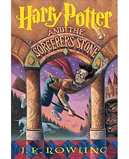
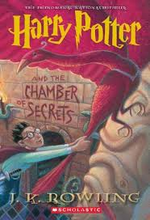

Adaptation of the first of J.K. Rowling's popular children's novels about Harry Potter, a boy who learns on his eleventh birthday that he is the orphaned son of two powerful wizards and possesses unique magical powers of his own. He is summoned from his life as an unwanted child to become a student at Hogwarts, an English boarding school for wizards. There, he meets several friends who become his closest allies and help him discover the truth about his parents' mysterious deaths.
The second instalment of boy wizard Harry Potter's adventures at Hogwarts School of Witchcraft and Wizardry, based on the novel by JK Rowling. A mysterious elf tells Harry to expect trouble during his second year at Hogwarts, but nothing can prepare him for trees that fight back, flying cars, spiders that talk and deadly warnings written in blood on the walls of the school.
